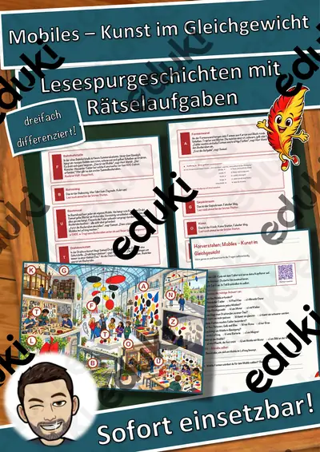
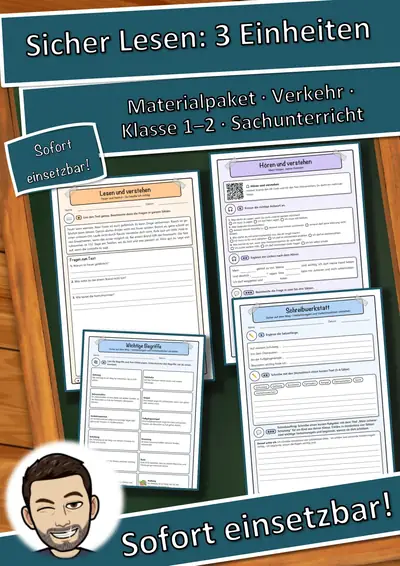

Gleichgewicht – balancieren, wackeln, sicher stehen – Lesespurgeschichte mit Rätselaufgaben (Klasse 1)
Gleichgewicht – balancieren, wackeln, sicher stehen – Lesespurgeschichte Sport (Klasse 1/2)Begib dich mit deiner Klasse auf eine wackelige Lesespur über den Balancier-Pfad im Erlebniswald! Tilda und Juri üben ihr Gleichgewicht: Auf der Storchenwiese stehen sie auf einem Bein, auf dem Baumstammweg balancieren sie mit ausgebreiteten Armen, über die Wackelbrücke geht immer nur einer. An den Trittsteinen hüpfen sie von Stein zu Stein, auf dem Barfußpfad spüren sie Moos, Kies, Rinde und Sand, auf dem Wippbrett lernen sie, die Knie zu beugen – und auf der Waldbühne balanciert Tilda zum Schluss über ein dickes Tau. Ihr Stoff-Flamingo Wackli, der am liebsten auf einem Bein steht, ist immer dabei. Am Ende jedes Abschnitts verrät ein Hinweis den nächsten Ort auf dem Plan – nur wer genau liest, findet den Weg und sammelt alle geheimen Buchstaben zum Lösungswort.
Die perfekte Lesespur für den SPORTUNTERRICHT der 1. und 2. Klasse – ideal als Einstieg in Balancierlandschaften und Bewegungsbaustellen: Sie verbindet erstes sinnentnehmendes Lesen mit Gleichgewicht, Körperwahrnehmung und gegenseitiger Hilfe. Das Material ist SOFORT EINSETZBAR und in DREI DIFFERENZIERUNGSSTUFEN (leicht ★ / mittel ★★ / schwer ★★★) angelegt.WICHTIG: Das komplette Material ist sowohl in FARBE als auch in SCHWARZ-WEISS enthalten – ideal zum Sparen von Druckkosten.DAS IST ENTHALTEN
- Lesespurgeschichte in 3 Niveaus (leicht, mittel, schwer)
- farbiger Waldplan als Suchkarte
- Hörverstehen mit QR-Code zur MP3 (selbstständiges Hören mit Kopfhörern)
- vier Aufträge auf dem Weg: ein Quiz, eine Rechenaufgabe, eine Zuordnung und ein Steckbrief
- Rätselseite (Wörter-Suchsel + Fragen)
- Ausmalbild zum Thema (Balancieren im Wald)
- ausführliches Lösungsblatt für die Lehrkraft
- alles zusätzlich als komplette Schwarz-Weiß-VarianteSO GEHT DIE LESESPURDie Kinder lesen ab START, finden im Text den nächsten Ort, suchen ihn auf dem Plan und lesen bei dieser Station weiter. An jeder richtigen Station gibt es einen Buchstaben. Eingebaute Sackgassen (Holzhütte, Picknicktisch, Futterhaus, Bach) sind keine Stationen und dienen der Selbstkontrolle. Am Ende werden die gesammelten Buchstaben umgestellt und ergeben ein geheimes Lösungswort. (Die Lösungen sind selbstverständlich nur im Lösungsblatt für die Lehrkraft enthalten.)INHALTLICHER SCHWERPUNKTDie Kinder üben das Gleichgewicht auf festem und wackeligem Untergrund, lernen, die Arme zum Ausgleich zu nutzen und nach vorn zu schauen, spüren verschiedene Böden barfuß und helfen einander.ABGEDECKTER LEHRPLAN (Klasse 1/2, Sport)
- Sport (LehrplanPLUS Bayern) – Jahrgangsstufe 1/2 „Gesundheit und Fitness“ / „Bewegen an und mit Geräten“: Gleichgewicht halten, balancieren, den eigenen Körper wahrnehmen.
- Deutsch – Lesen: Texten gezielt Informationen entnehmen; Zuhören: einem Sachhörtext folgen (Hörverstehen mit MP3).
- Mathematik – Addition und Subtraktion im Zahlenraum bis 20, einfache Multiplikation.
- Fächerübergreifend / Kompetenzen: Heimat- und Sachunterricht (Wald, Sinne), soziales Lernen (Rücksicht, Helfen), genaues Lesen und Prüfen, kreatives Gestalten (Ausmalbild).
Geeignet für Freiarbeit, Stationenlernen, Vertretungsstunden, Wochenplan, Projekttage, Wandertage und Distanzunterricht. Klassenstufe 1/2.
Ähnliche Materialien

Sport-Werkstatt Klettern & Balancieren: Aufgabenkarten in 3 Stufen & Kurztest (Klasse 3–8)

Lesespur: Mobiles: Kunst im Gleichgewicht – Lesespurgeschichte mit Rätseln (Klasse 6)

Bein Lückentext mit Wortspeicher Hörverstehen und Suchsel

Halloween Wackel-Skelett – Bastelvorlage, Sachtext Skelett und Knochen beschriften, 3-fach differenziert (Klasse 3/4)

Lesespur: Rettungsschwimmen: sicher im Wasser helfen – Lesespurgeschichte mit Rätseln (Klasse 9)

Lesespur: Schlittschuhlaufen: sicher übers Eis gleiten – Lesespurgeschichte mit Rätseln (Klasse 6)

Markt, Preise und Preiselastizität – Angebot, Nachfrage, Gleichgewicht und Elastizität mit Probe-Kurzarbeit (Berufsschule)
